lethokoa
banket worn mostly by men to provide warmth and signifies manhood and protection
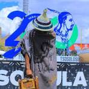 Aranda Texile Millsmaluti blanket
It is named after the Maluti Mountains of Lesotho to reflect pride,unity and indentity
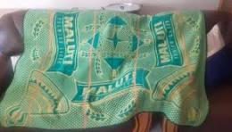 Aranda Texile Millschabana sa khomo blanket
It symbolize wealth and the importance of cattle in Basotho society
 Aranda Texile Mills
Aranda Texile Millslinare blanket
The linare blanket meaning"lion" symbolize strength, bravery and leadership.Represent power and protection>
 Aranda Texile Mills
Aranda Texile Millskholokoane belt
it has colorful decorations and symbolic patterns>
mokorotlo hat
The national hat of Lesotho made from woven grass in a conical shape.It represent national pride,unity and cultural indentity , it is also featured on the national flag of Lesotho
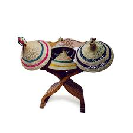ts'ets'e hat
it is a smaller , rounded version of the mokorotlo

thethana
traditional Basotho skirt made from thick fabric or animal skin worn by women
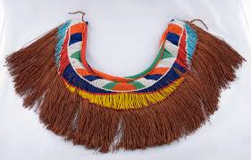seananamrena-poone blanket
the special edition of the famous seanamarena brand decorated by maize(poone)which represent life ,prosperity, refecting the importance of agriculture in Basotho
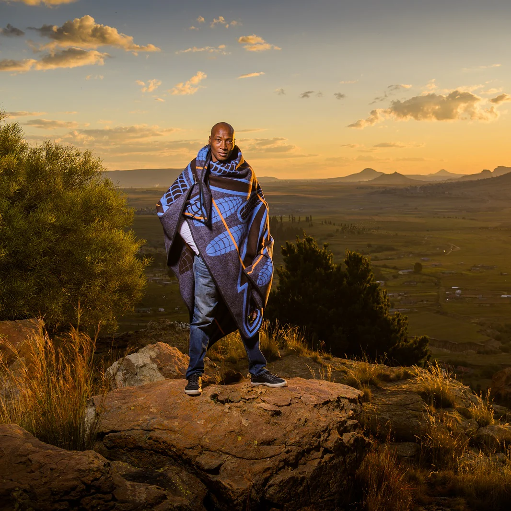 Aranda Texile Millssebeto
traditional animal skin worn by men made from sheepskin or cowhide
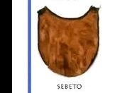 Liphofung Cultural Village
mokhahla
it is a outer garment made from animal skin worn by men in intiation school
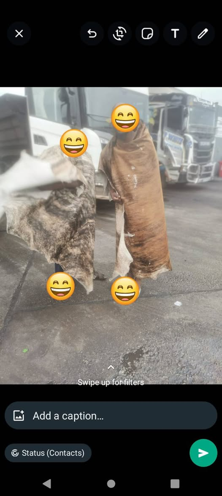Seanamarena blanket
most famous basotho blanket. It symbolizes heritage and national pride
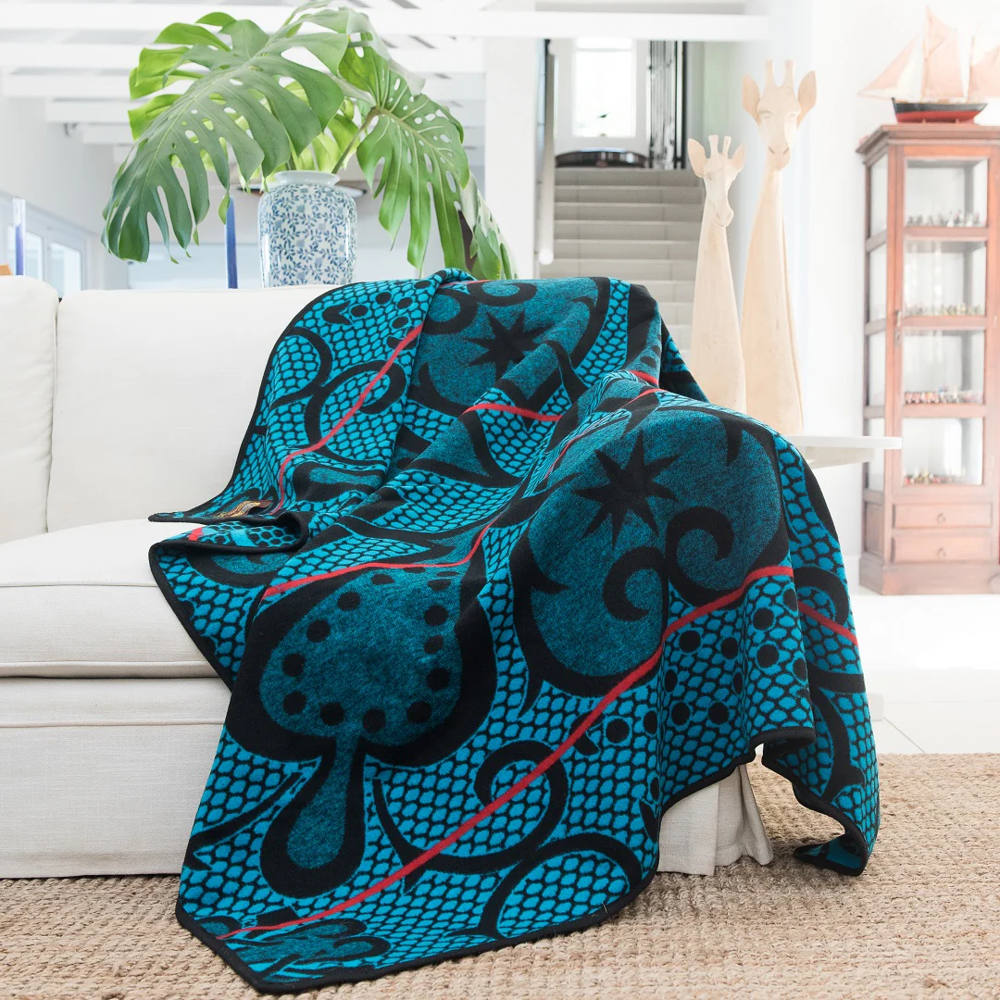 Aranda Texile MillsPitseng blanket
The blanket takes its name from a region in Lesotho symbolizing community pride and belonging
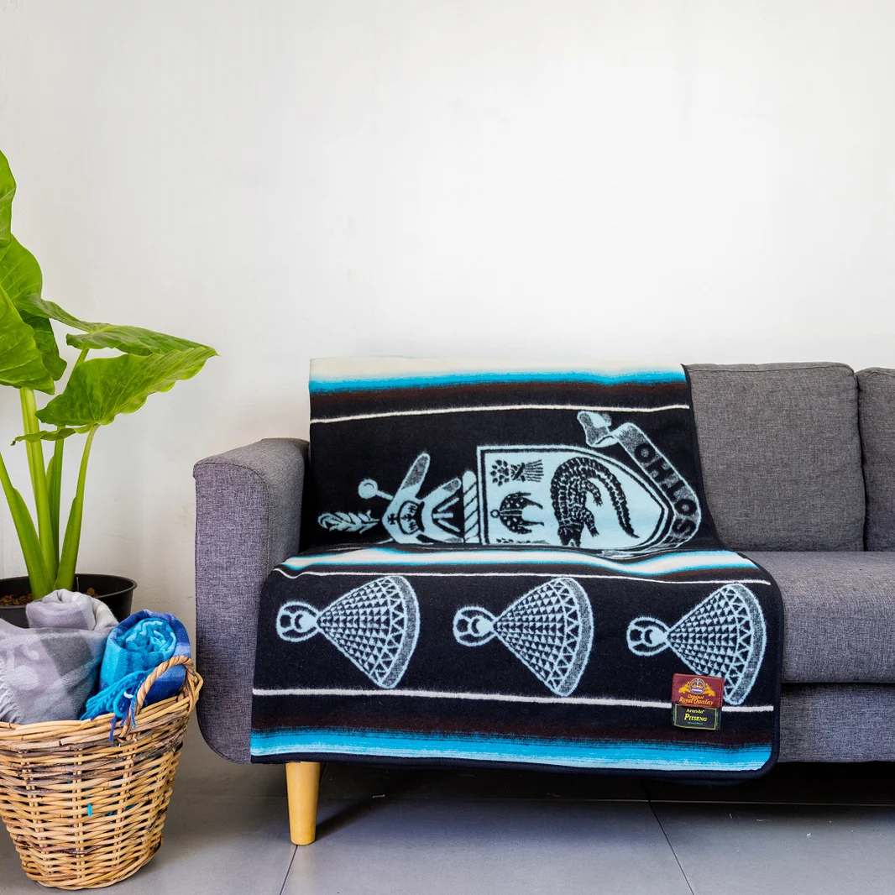 Aranda Texile MillsKhotso cards
"khotso" means peace, and the banket symbolizes unity and peace
 Aranda Texile Mills
Aranda Texile MillsNalane
"nalane"means heritage or history therefore this blanket design represents Basotho history and cultural roots
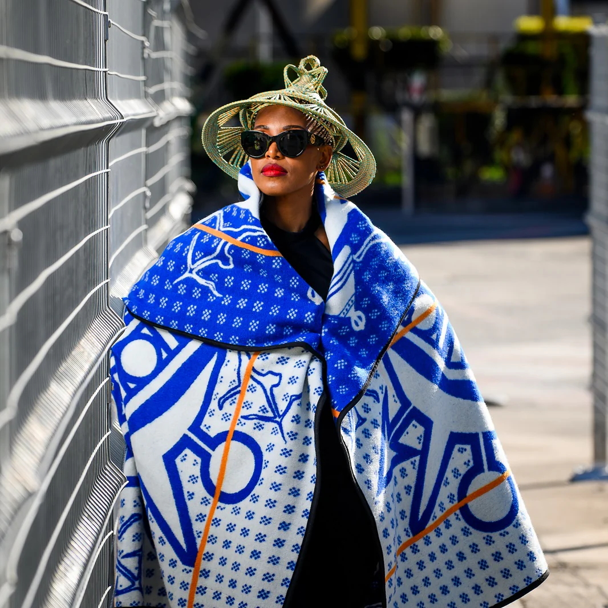 Aranda Texile MillsMoholu
t is a heavy, warm blanket worn in cold weather. It signifies strength, resilience and reflecting Basothi's life in the highlands
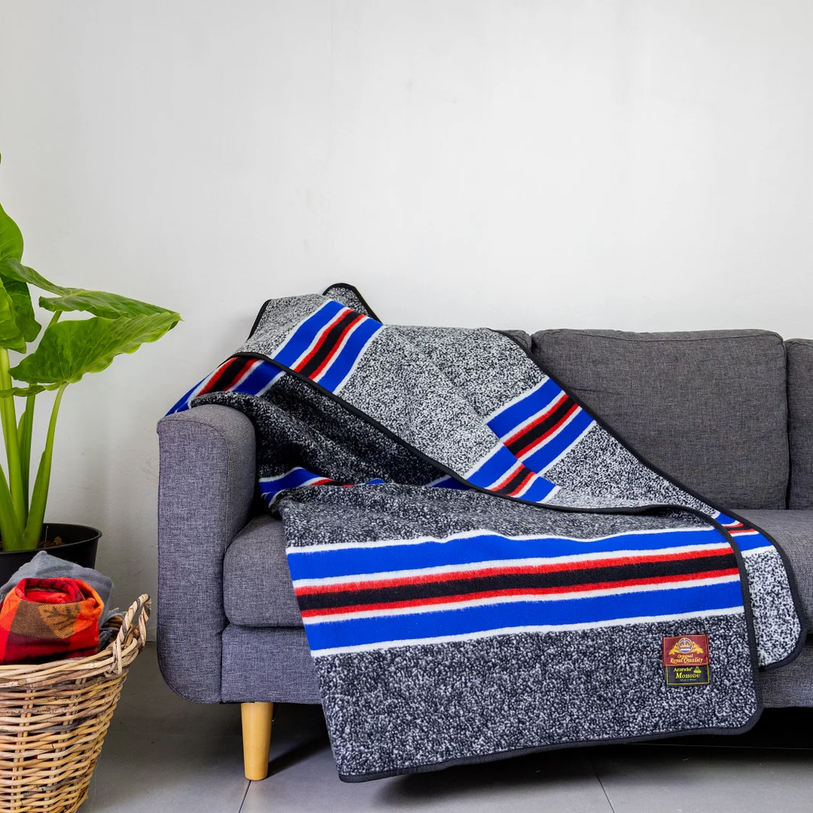Aranda Texile Millskobo ea poloko
it is often worn during religious gatherings

letsatsi
the blanket features sun inspired designs symbolizing hope, light and new beginnings
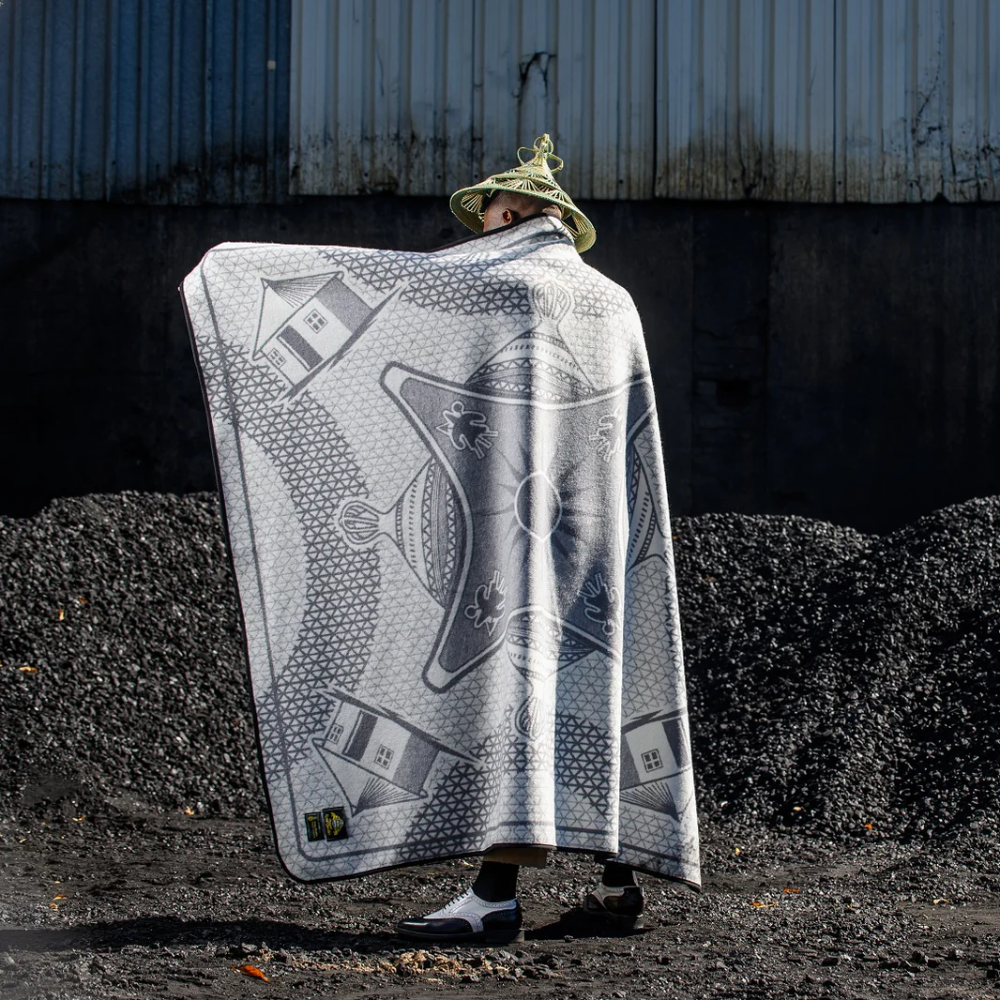seshoeshoe dress
Traditional Basotho women's dress made from cotton fabric

Sebeto
Liphofung Cultural VillageLesira
Made from cowhide or goat skin, cut into long, narrow strips that hang vertically.Traditionallly worn by Basotho men during initiation ceremonies>
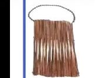 Liphofung Cultural Villagekhotso-ntje poone
 Aranda Texile Mills
Aranda Texile Mills
Sefatla
A traditional shoe made from animal skin. Worn by both men and women
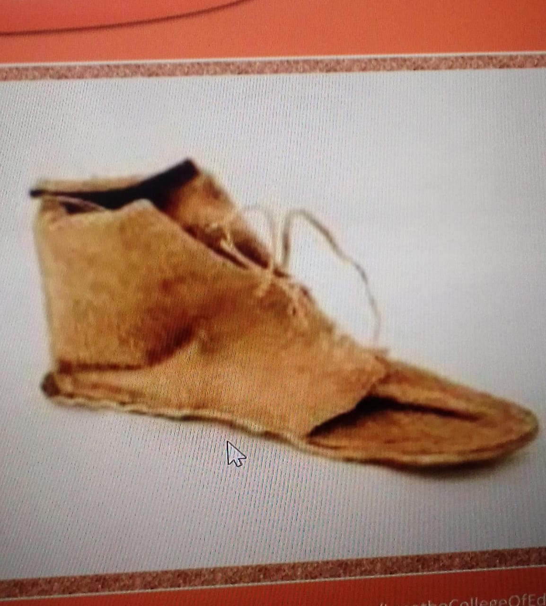kharetsana
it is worn by young basotho girls especially during cultural events to symbolize beauty
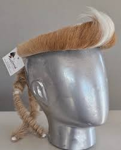kuoane
basotho traditional men's hat made from animal skin
sekoele
the blanket
jubilee ea boipuso
It was created to commemorate Lesotho's independence.It symbolizes freedom
 Aranda Texile Mills
Aranda Texile Mills
Motsoako
feastures a blend of different colors and patterns,symobolizing unity in diversity among Basotho
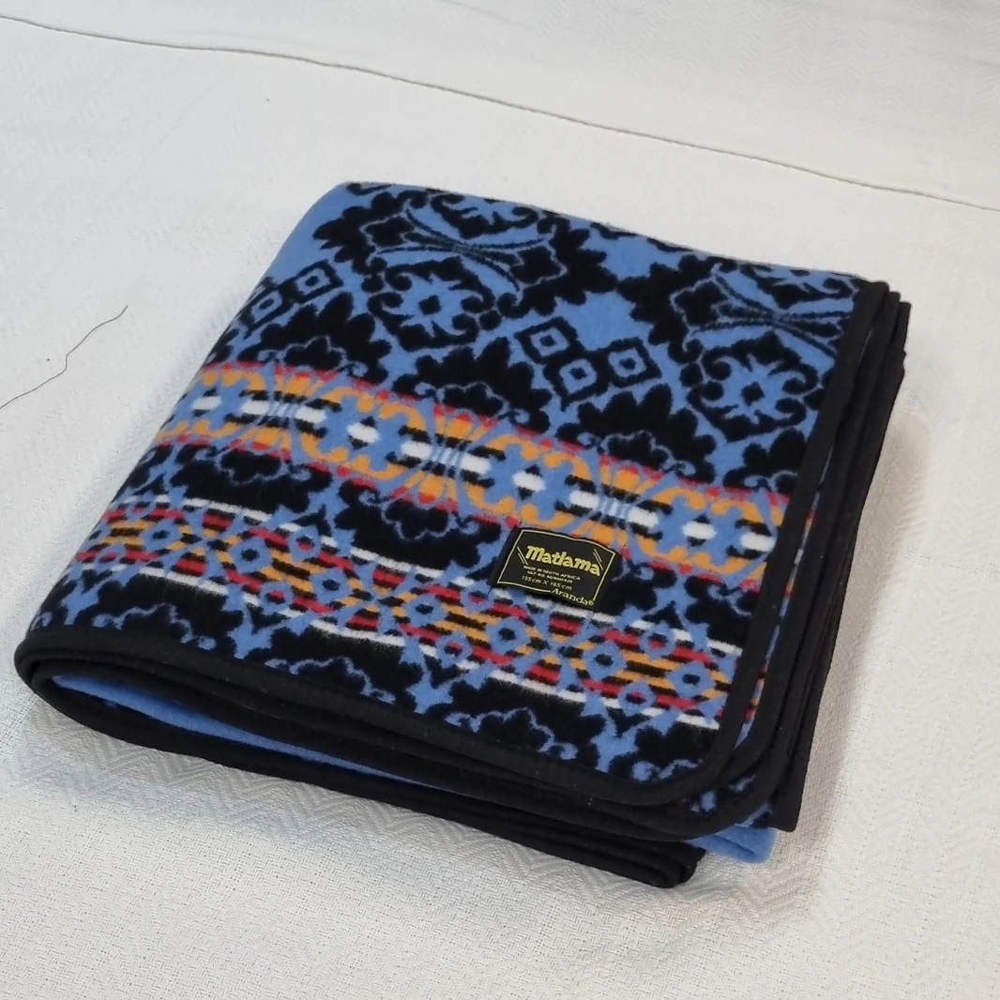 Aranda Texile Mills